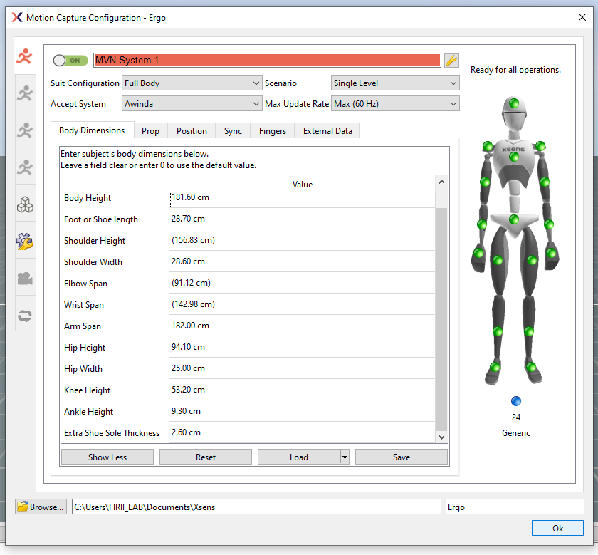
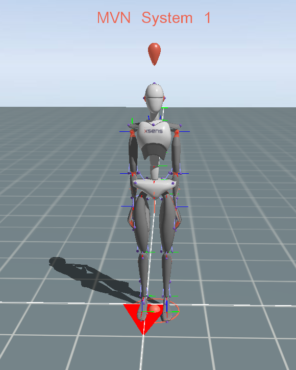
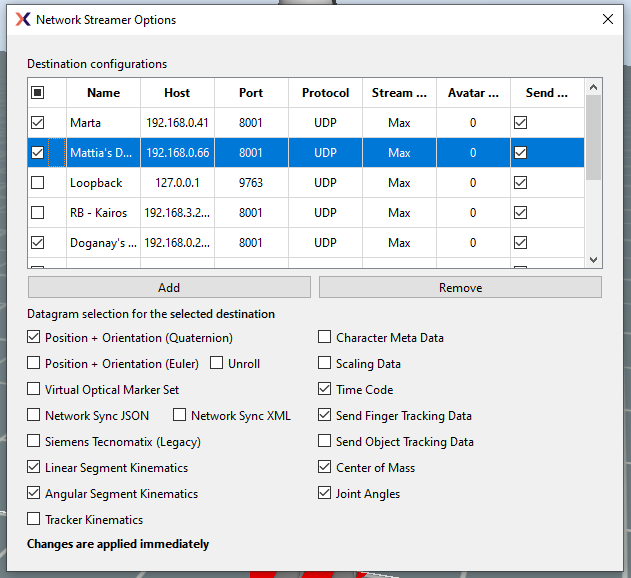

Setup
In order to stream data through the ROS middleware, install MVN Studio software to stream the data from a Windows computer. An Linux Ubuntu client computer is required to receive the streamed data and publish it to a ROS network.
Note
The Windows server computer and the Ubuntu client computer have to be on the same network.
Server (Microsoft Windows computer)
Install MVN Awinda Studio 2023 software.
If you need further information about the MVN software, please download the MVN User Manual.
Open a Live Configuration by clicking on “File -> Edit Live Configuration…” Load the desired body measurements.


After the calibration, you should be able to visualise the tracked human as in the following picture:


Open the Network Streamer window, add a new option and select to the following options:
Position + Orientation (Quaternion)
Linear Segment Kinematics
Angular Segment Kinematics
Time Code
Center of Mass
Joint Angles
Select UDP as protocol and 8001 as port.


Client (Linux Ubuntu computer)
Requirements:
GNU/Linux Ubuntu 20.04
On your Linux Ubuntu machine install ROS noetic and git.
Execute the following steps to create a catkin workspace, clone the xsens_mvn_ros ROS package and compile it.
Create a catkin workspace and change directory to the source code:
mkdir -p path_to_catkin_ws/src cd path_to_catkin_ws/src
Clone the xsens_mvn_ros repository:
git clone https://github.com/hrii-iit/xsens_mvn_ros.git --recursive
Build your catkin workspace
cd path_to_catkin_ws catkin build